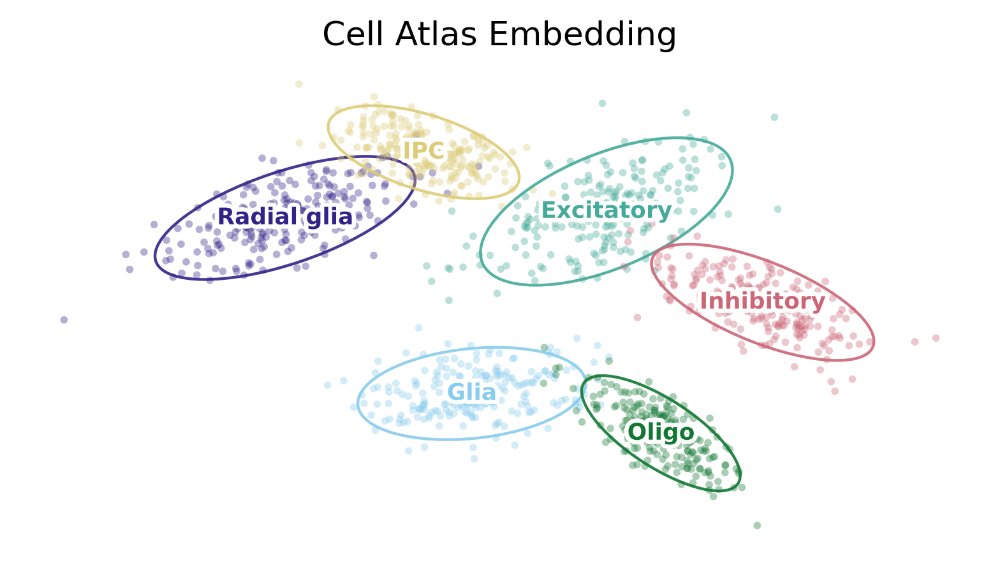
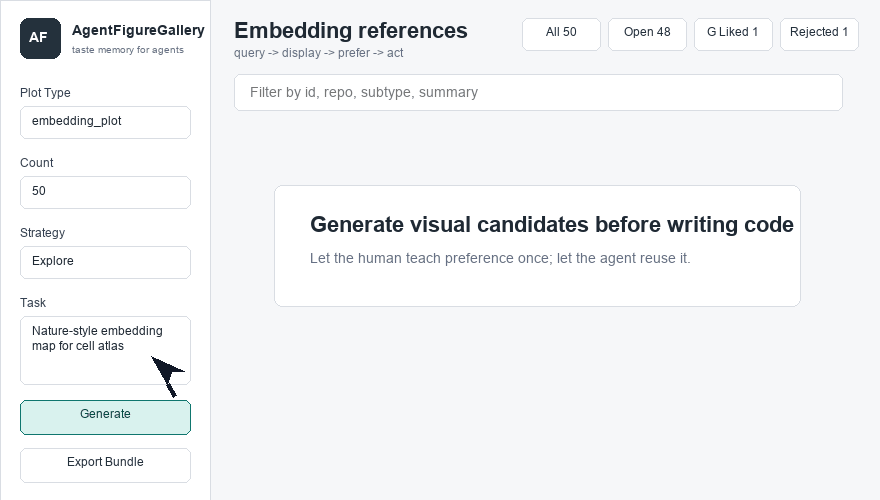
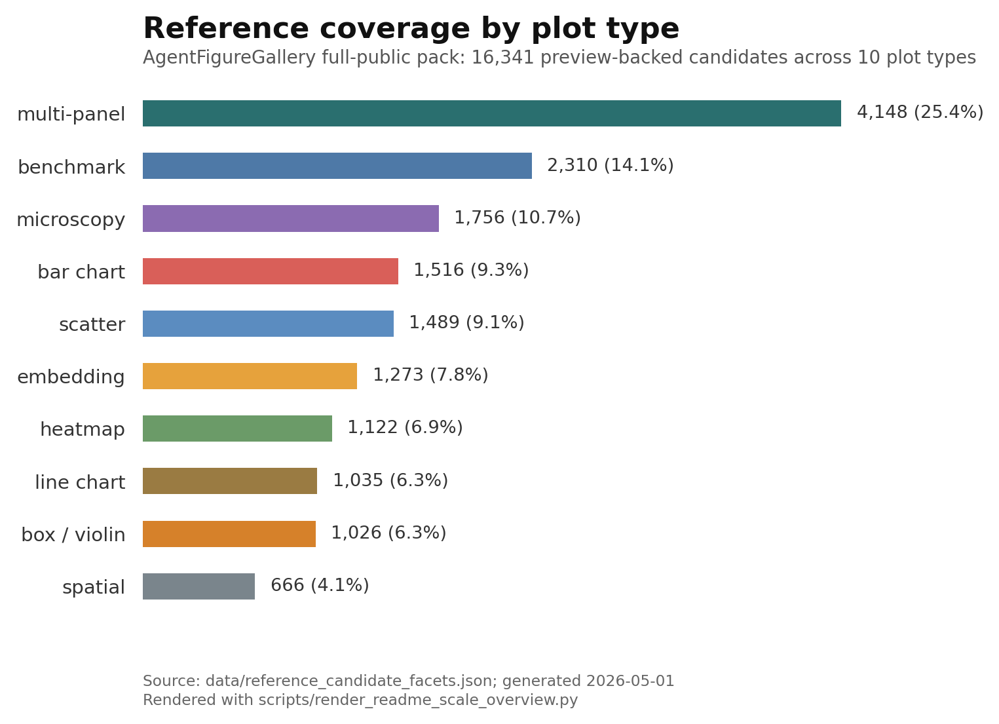
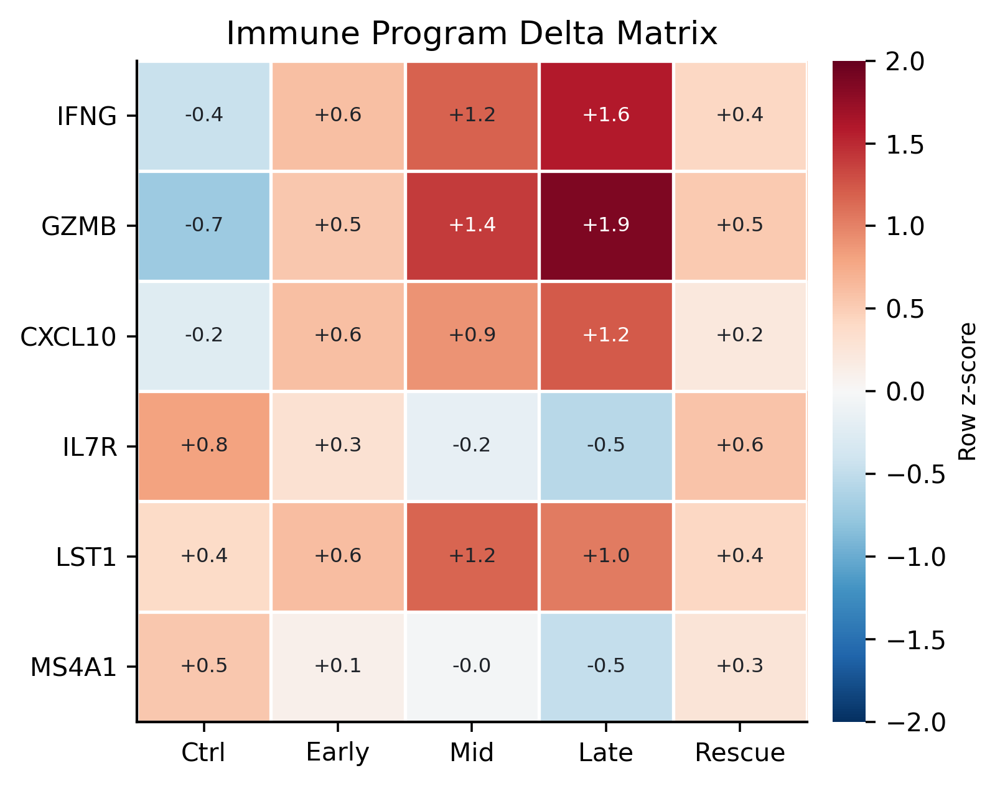
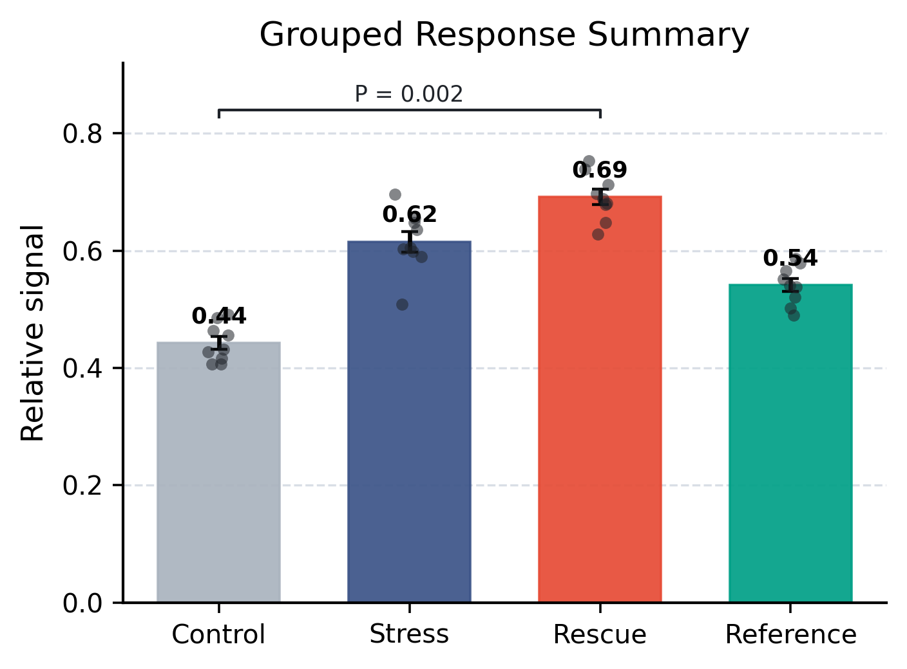
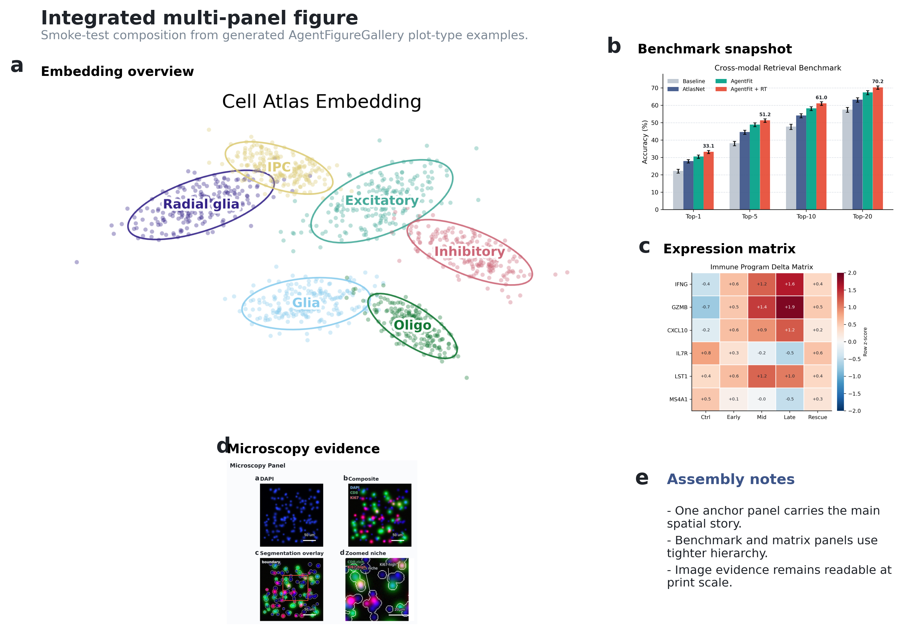

Visual taste memory for plotting agents
AgentFigureGallery
Search real scientific figure references, choose the examples you prefer, and export a bundle that guides Codex or Claude Code before it writes plotting code.
16k+
public references
10
plot types
3 min
first local run
1 loop
query, select, bundle
Workflow
Pick references before plotting
The local gallery puts human preference before code generation: query candidates, mark preferred examples, then pass a compact reference bundle to the agent.

Coverage
Reference pool scale
The public pack covers common scientific plots used in bioinformatics, benchmarking, spatial analysis, microscopy, and multi-panel paper figures.

Examples
Plot styles the gallery can guide

Heatmaps

Bar charts

Multi-panel figures
First run
Install, open, select
The bootstrap installs the CLI and Codex skill wrapper. The first-run command creates a starter session and opens the local gallery.
curl -fsSL https://raw.githubusercontent.com/Dsadd4/AgentFigureGallery/main/scripts/install.sh | bash~/AgentFigureGallery/.venv/bin/agentfiguregallery first-run --opennpx add-skill Dsadd4/AgentFigureGallery